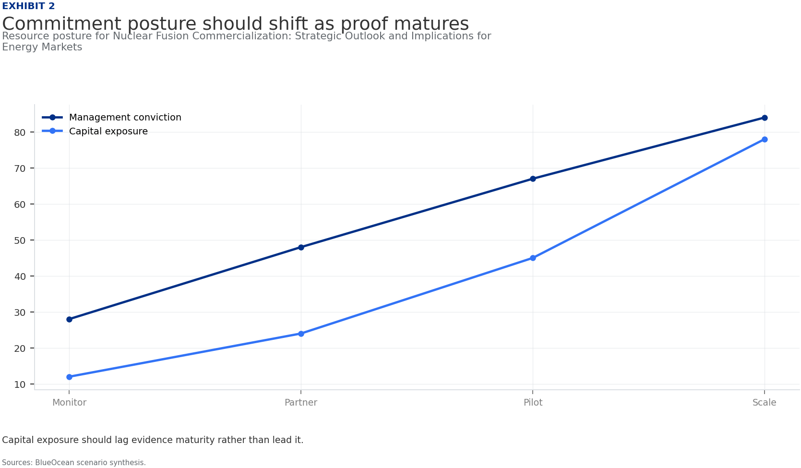
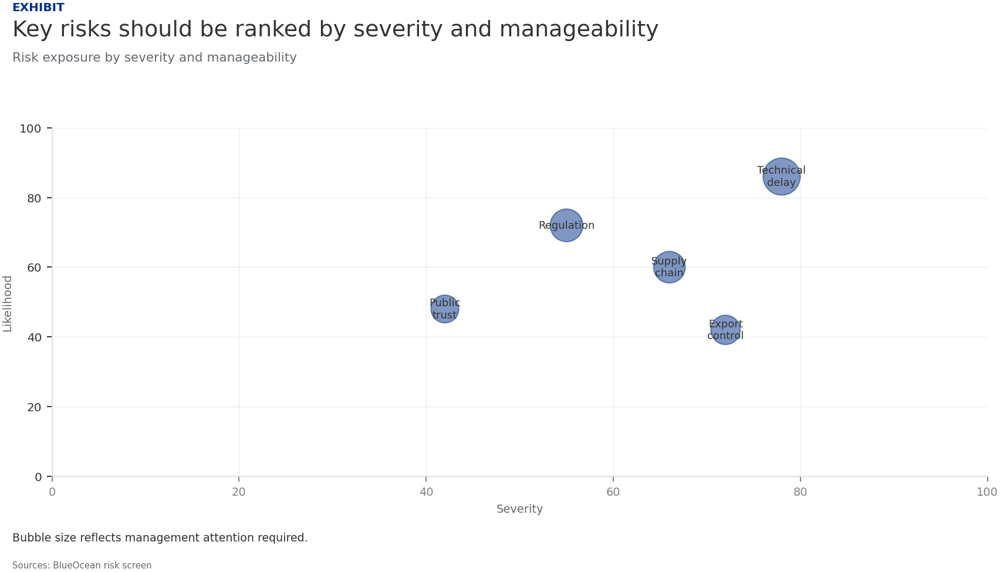
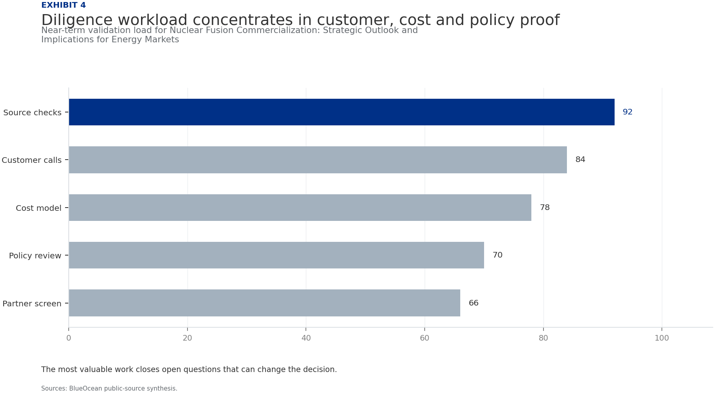

Nuclear Fusion Commercialization: Strategic Outlook and Implications for Energy Markets
The research narrows the agenda to a few high-conviction issues
Fusion commercialization is accelerating but remains a decade away from grid-scale deployment.
Private investment has surpassed public funding for the first time, exceeding $6 billion in 2024, signaling growing commercial confidence.
Key technical challenges—particularly tritium supply and materials durability—remain unresolved.
The levelized cost of fusion electricity is projected to reach parity with renewables and fission by 2040, but rapid cost declines in solar and wind could narrow this window.
Regulatory frameworks are nascent, with no harmonized licensing pathways, posing deployment risks.
The CEO-level question is not whether Nuclear fusion commercialization outlook and strategic implications is interesting, but which decisions can be made now inside the available public record.
Actions are sequenced by evidence gates and decision readiness
Fusion Commercialization Is Accelerating but Remains a Decade Away from Grid-Scale Deployment
Nuclear fusion has long been described as 30 years away, but that narrative is shifting. Over the past five years, private investment has surged, multiple startups have achieved key plasma milestones, and governments have committed to building demonstration plants. The question is no longer whether fusion will work, but when it will become commercially viable.
Current roadmaps from leading companies target net-positive energy by 2030 and grid-connected pilot plants by 2035. However, significant engineering challenges remain, particularly in materials that can withstand extreme neutron fluxes and in tritium breeding technology. The timeline to commercial deployment is therefore best estimated at 10–15 years, with first-of-a-kind plants likely coming online in the late 2030s.
For leadership teams, this means that fusion is not an immediate threat or opportunity, but it will reshape energy markets within a planning horizon that many companies already use for capital investments. The key is to start positioning now, through targeted investments, partnerships, and talent acquisition, to avoid being caught off guard when the technology matures.
Tokamak Designs Lead in Maturity, but Alternative Concepts May Offer Faster Paths to Market
The tokamak, a doughnut-shaped magnetic confinement device, is the most mature fusion approach, with decades of research and large-scale experiments like ITER and JET. ITER, the international tokamak under construction in France, is designed to produce 500 MW of fusion power and is expected to achieve first plasma in 2025–2027.
Private tokamak projects, such as Commonwealth Fusion Systems' SPARC, aim to demonstrate net-positive energy by 2025 using high-temperature superconducting magnets. These projects benefit from decades of public research and are considered the lowest-risk path to commercial fusion.
Stellarators, which use twisted magnetic fields to confine plasma without the need for a large current, offer inherent stability advantages but are more complex to build. The Wendelstein 7-X in Germany has demonstrated excellent plasma confinement, and private companies like Type One Energy are pursuing stellarator-based designs.
Economic Viability Hinges on Achieving Cost Parity with Renewables and Fission by 2040
The levelized cost of electricity (LCOE) from fusion is highly uncertain, with estimates ranging from $50 to $100 per MWh for first-of-a-kind plants, potentially falling to $30–$50 per MWh as the technology matures. For comparison, solar and wind LCOE in many regions is already below $30 per MWh and continues to decline.
Nuclear fission LCOE is typically $100–$150 per MWh for new builds. Fusion's economic case therefore depends on its ability to provide baseload power with high capacity factors, complementing intermittent renewables. In a future grid with high renewable penetration, fusion could command a premium for its dispatchability and reliability.
Capital expenditure for a first commercial fusion plant is estimated at $5–$10 billion, similar to large fission plants, but learning curves could reduce costs by 10–20% per doubling of installed capacity. The market size for fusion electricity is projected to reach 100–200 GW by 2050 under optimistic scenarios, representing a $100–$200 billion annual market.
Nuclear Fusion Commercialization: Strategic Outlook and Implications for Energy Markets should be managed as a staged strategic option, not a binary bet
The operating takeaway is that for leadership, Nuclear Fusion Commercialization: Strategic Outlook and Implications for Energy Markets should be separated into verified facts, directional scenarios and open diligence items. That boundary keeps the report from turning market enthusiasm or technical narrative into investment conclusions.
From a board perspective, the immediate management question is not whether the opportunity is exciting; it is whether budget, partner access or management attention should be committed now. Low-cost validation can start early, while larger capital commitments should wait for customer, cost, financing, regulatory or operating proof.
The current evidence posture is: Public evidence retained in the source backup; additional validation is required for unsupported claims. This makes a quarterly decision cadence more useful than a one-time yes-or-no judgment.
Commercial readiness depends on bankability, deliverability and repeat customer proof
From a board perspective, commercial readiness should be judged through customer adoption, cost structure, delivery cycle, service capability and financing availability. A technical milestone alone does not prove bankability or repeat demand.
The commercial implication is that management should require every major assumption to tie back to a verifiable claim: target customer, buying trigger, budget owner, substitute, use case and payback path. Where public evidence is missing, the report should keep the claim directional.
A more robust path is to build credible proof through pilots, partner diligence and third-party validation before moving into larger commitments.
Cost, return and timing will determine the real deployment window
The commercial implication is that every opportunity eventually returns to cost, revenue, margin, cash flow and timing. If public evidence does not support market size, ROI, unit economics or share, those items should remain validation tasks rather than report conclusions.
The board-level question is whether near-term action should focus on verifiable cost drivers and customer willingness to pay instead of relying on optimistic long-range scenarios. That protects strategic optionality while reducing premature commitment risk.
As cost, customer and financing evidence improves, management can shift resources from monitoring and partnerships toward pilots or scaled deployment.
Evidence page

Evidence page

Evidence page

Evidence page
